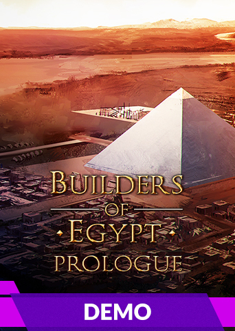

Builders of Egypt: Prologue
Details
|  | |
| Playtime | Not Played |
| Last Activity | Never |
| Added | 16/09/2024 23:34:26 |
| Modified | 18/05/2025 2:02:39 |
| Completion Status | Not Played |
| Library | Gog |
| Source | GOG |
| Platform | PC (Windows) |
| Release Date | 02/03/2020 |
| Community Score | |
| Critic Score | |
| User Score | |
| Genre | Building Historical Strategy |
| Developer | Strategy Labs |
| Publisher | PlayWay S.A., CreativeForge Games |
| Feature | Single Player |
| Links | Forum Store Page PCGamingWiki |
| Tag | Base Building Building City Builder Demo Historical Management Multiplayer Realistic Real-Time RTS Sandbox Strategy Tactical War |
Description

Builders Of Egypt is an economic type of city-building taking place in the valley of the Nile. The story starts in a little-known protodynastic period in which you will be able to observe the birth of the Old Egypt and finished with the death of Cleopatra VII.

The most important aspect is the skillful management of urban planning by shaping the grid of streets, placing buildings and their mutual relation. Well-designed city will greatly improve economic efficiency which may convert into city income.
Diplomacy and politics:
The governor will face very difficult choices to be made in a constantly changing political environment. Costly expeditions, Pharaoh and other cities requests, military threat and a mixture of different cultures will be a commonplace. A series of wrong choices can cost the loss of trading partners and low interest in the city by settlers. Moreover, the total lack of obedience to the rulers may end up with a civil war.

Religion:
Deity will be able to interfere with daily life but it will be done implicitly. The main aspect of religion will be satisfying the need for access to the places of worship, providing supplies for temples or organizing festivals. Neglecting this sphere may result in a dangerous social unrest on a par with e.g. famine.
Trade:
Trade is the most important element in royal treasury. Without it, it is very difficult for economic stability built solely on taxes. Therefore, in the interest of the player, producing goods for export at prices that will be able to change dynamically depending on the geopolitical situation, will be required.

Monuments:
What would the real Ancient Egypt be without its monumental sacred architecture? There are mastabas, obelisks, Karnak among others, the Ramesseum and of course the pyramids that are waiting to be built. You will be able to observe the slow process of construction. A team of carpenters, masons, architects and ordinary workers will rise building step by step. It will not be just a graphic feature - the building process is costly and will have an impact on the finances or the public mood.
War
Egypt's history is full of clashes of emerging and failing empires. You will have the responsibility of defending cities from foreign military attacks, making plans to attack and joining your forces on Pharaoh's own call.